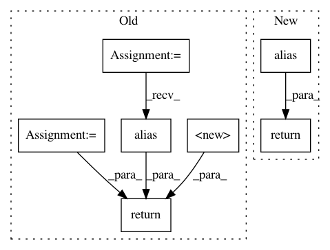

48ffac7470c47e6b77f51f954cb0c754f9183797,contrib/go/src/python/pants/contrib/go/register.py,,build_file_aliases,#,25
Before Change
def build_file_aliases():
return BuildFileAliases(
targets={
GoBinary.alias(): TargetMacro.Factory.wrap(GoBinary.create, GoBinary),
GoLibrary.alias(): TargetMacro.Factory.wrap(GoLibrary.create, GoLibrary),
GoProtobufLibrary.alias(): GoProtobufLibrary,
GoThriftLibrary.alias(): GoThriftLibrary,
"go_remote_libraries": TargetMacro.Factory.wrap(
GoRemoteLibrary.from_packages, GoRemoteLibrary
),
"go_remote_library": TargetMacro.Factory.wrap(
GoRemoteLibrary.from_package, GoRemoteLibrary
),
}
)
def register_goals():
task(name="go-thrift", action=GoThriftGen).install("gen")
After Change
def build_file_aliases():
return BuildFileAliases(
targets={
GoBinaryV1.alias(): TargetMacro.Factory.wrap(GoBinaryV1.create, GoBinaryV1),
GoLibraryV1.alias(): TargetMacro.Factory.wrap(GoLibraryV1.create, GoLibraryV1),
GoProtobufLibraryV1.alias(): GoProtobufLibraryV1,
GoThriftLibraryV1.alias(): GoThriftLibraryV1,
"go_remote_libraries": TargetMacro.Factory.wrap(
GoRemoteLibraryV1.from_packages, GoRemoteLibraryV1
),
"go_remote_library": TargetMacro.Factory.wrap(
GoRemoteLibraryV1.from_package, GoRemoteLibraryV1
),
}
)
def register_goals():
task(name="go-thrift", action=GoThriftGen).install("gen")
In pattern: SUPERPATTERN
Frequency: 3
Non-data size: 7
Instances
Project Name: pantsbuild/pants
Commit Name: 48ffac7470c47e6b77f51f954cb0c754f9183797
Time: 2020-04-01
Author: 14852634+Eric-Arellano@users.noreply.github.com
File Name: contrib/go/src/python/pants/contrib/go/register.py
Class Name:
Method Name: build_file_aliases
Project Name: pantsbuild/pants
Commit Name: f65e99df5874e9f237507e4e608e91701b0d339c
Time: 2020-04-03
Author: 14852634+Eric-Arellano@users.noreply.github.com
File Name: src/python/pants/backend/native/register.py
Class Name:
Method Name: build_file_aliases
Project Name: pantsbuild/pants
Commit Name: 71462da0cdb88c88539afefc4c01ff810b994200
Time: 2015-09-08
Author: john.sirois@gmail.com
File Name: contrib/go/src/python/pants/contrib/go/register.py
Class Name:
Method Name: build_file_aliases